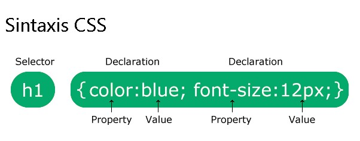

Propósito del sitio
Oye tu! ... te queremos dar a conocer información, funcionalidad y herramnientas para el desarrollo de sitios web en base de CSS y Frameworks CSS.
Atrevete a hacer parte de este proceso de formación y llena tu mundo de ideas nuevas, para que las puedas llevara a cabo sin limite alguno.
Hojas de Estilo en Cascada CSS
Las CSS son las iniciales de hojas de estilo en cascada (Cascading Style Sheets), con HTML se realiza la creación y definición de las paginas y con CSS se establece como los elementos serán desplegados en la pantalla. Segun Avila Pérez, M. (2020)
Los beneficios del uso de CSS es la aplicación de estilos específicos a elementos, permite la separación del estilo del contenido a mostrar, y si se una solo HTML, todos los formatos y estilos quedan en un mismo documento y lo vuelve más difícil de mantener al paso que la pagina crece. Según Avila Pérez, M. (2020)
Las técnicas aplicación de estilos CSS en un documento HTML, es en línea, incrustado o interno y externo. Según Avila Pérez, M. (2020)
CCS en línea un estilo es aplicado a un único elemento con el atributo style. Según Avila Pérez, M. (2020)
CCS Incrustado o interno definido en la etiqueta (style) dentro de la cabecera (head) de una página HTML. Según Avila Pérez, M. (2020)
CSS externo es la mas recomendada, todos los estilos quedan almacenados en un archivo con la extencion.css. El archivo es enlazado con la pagina HTML usando la etiqueta (link), dentro de la cabecera (head) Según Avila Pérez, M. (2020)
Frameworks CSS
Es una colección que permite editar de forma más ágil las hojas de estilo en cascada y la creación de temas consistentes. Terán Anciano, J. (2016)